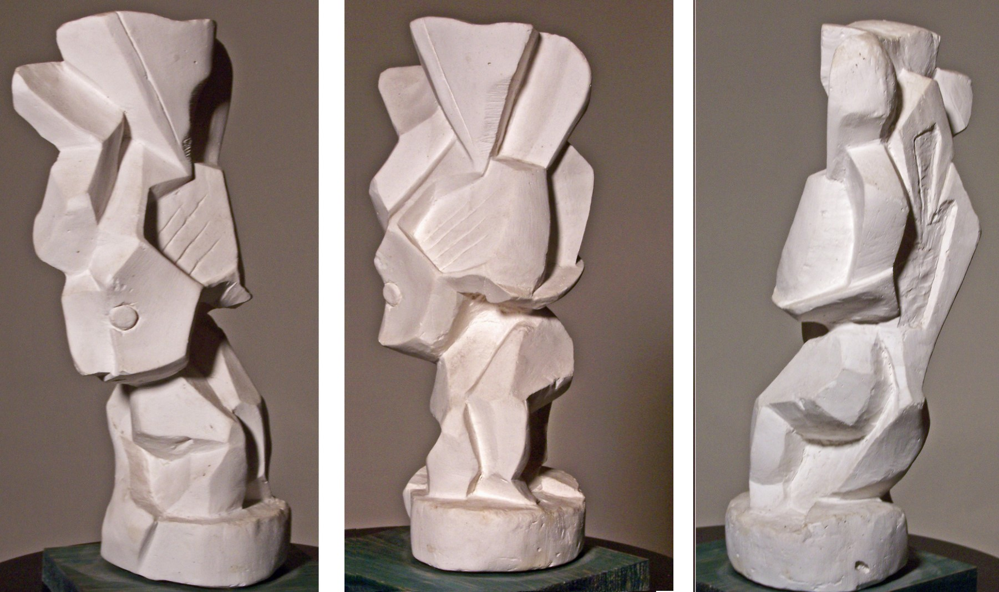
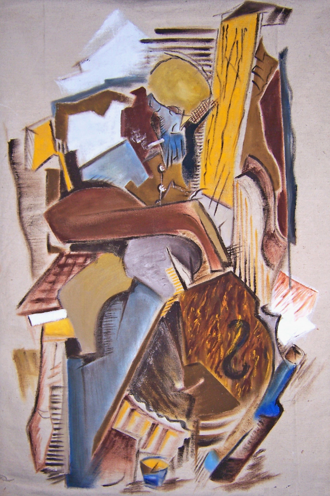
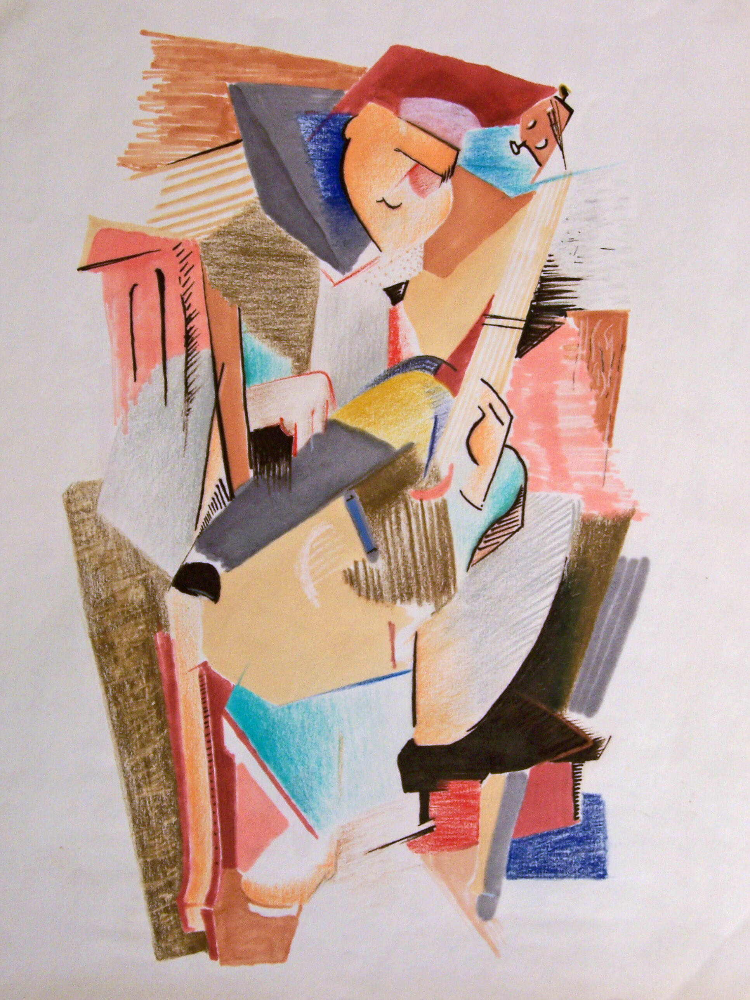
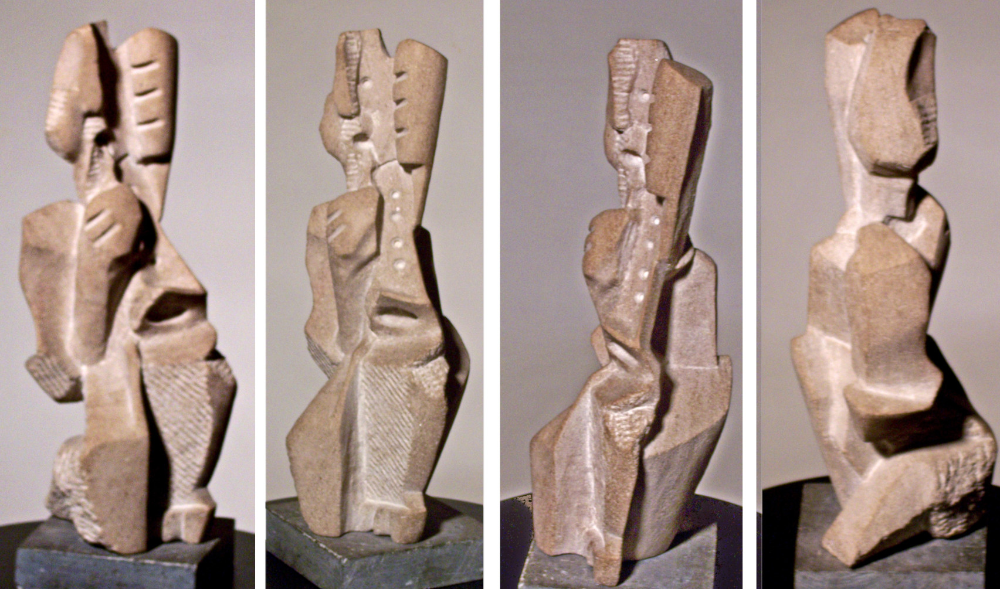
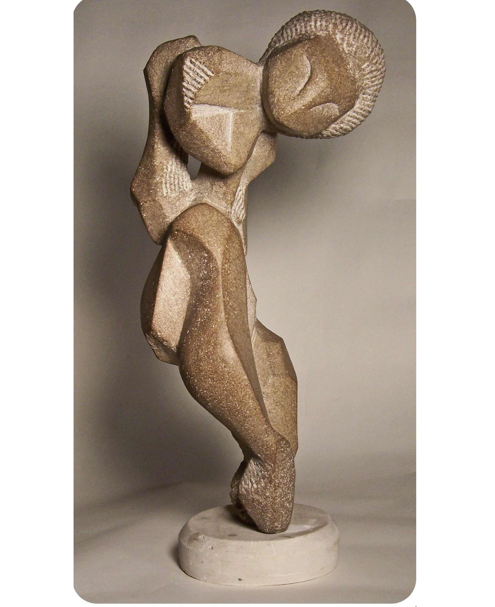

Copy, Transform, Combine: The Creative Trifecta
Why fuse figures or merge them with objects? Because art thrives on reinvention. Like a musical remix, my work layers old and new—copying, transforming, and combining forms to create fresh visual rhythms. It’s not just technique; it’s a philosophy of creativity.

Kirby Ferguson’s "Everything is a Remix" (2010) frames creativity as a three-step dance: copy, transform, combine. Think of sampling in music or fusion in cooking—art, too, remixes existing elements into something unexpected yet familiar.

Harmony & Emphasis: The Dance of Visual Rhythm

In visual art, this means playing with elements (color, line, texture) and principles (balance, unity, rhythm). By blending them, I sculpt harmony—where repetition soothes, and contrast surprises. Too much sameness? Dull. A dash of variety? That's Magic.

Unity in Art: When Parts Become Poetry
Harmony is the glue: related shapes or colors sing together. But emphasis is the spotlight—a curve in a world of angles, a bold hue in muted tones. Together, they create tension and release, like a jazz improvisation.

Unity is the finale—where all elements click into cohesion. It’s not just balance; it’s alchemy. A fused figure-guitar isn’t just a hybrid; it’s a new entity, greater than its parts. Pure form becomes pure experience.
Rooted in Tradition, Reimagined for Today
My remixes nod to African sculpture’s symbolic truth (knowing + seeing) & Mayan glyphs’ fragmented grace. Artists like Henri Laurens and Magda Frank—who bridged figuration and abstraction—are quiet mentors in this dance of reinvention.

To remix is to honor tradition while whispering to the future. So next time you see a figure melting into a saxophone, listen closely. It’s not just art—it’s a conversation across time.
Final Tip: "Look up Laurens, Lipschitz, and Magda Frank. Then revisit my work. See the echoes? That’s the remix at play."

Richard Diaz
Every artwork relies on three core elements: subject (what’s shown), form (how it’s made), and content (why it exists). Analyze these layers to fully appreciate the piece—look beyond the obvious to discover deeper meaning.